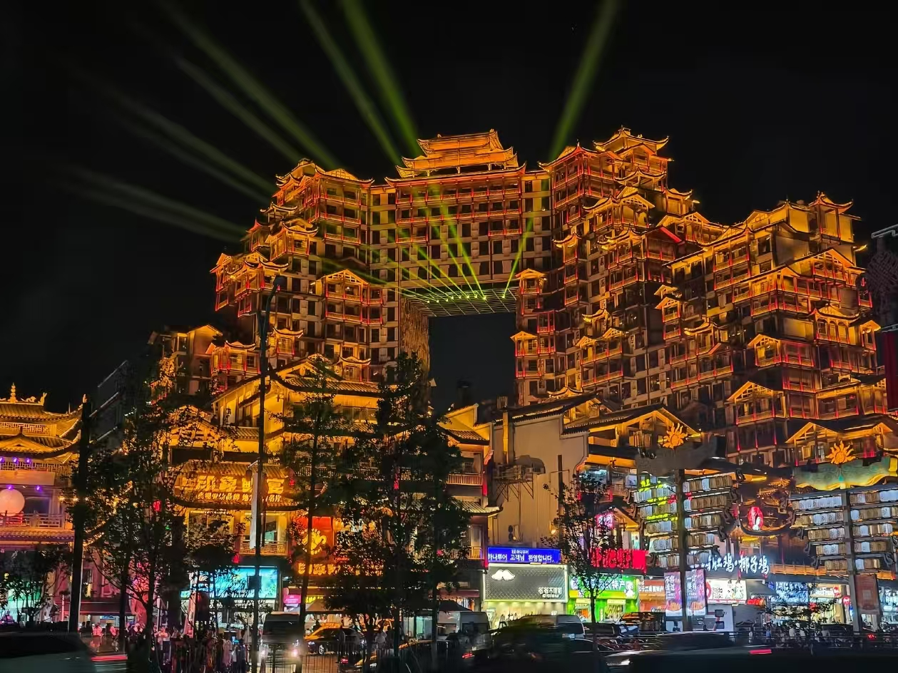
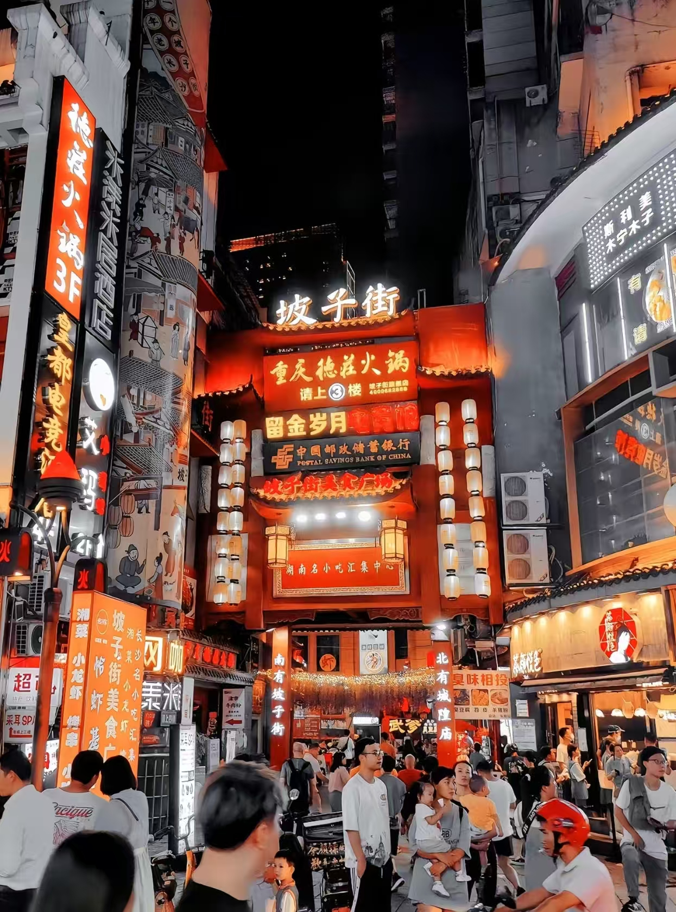
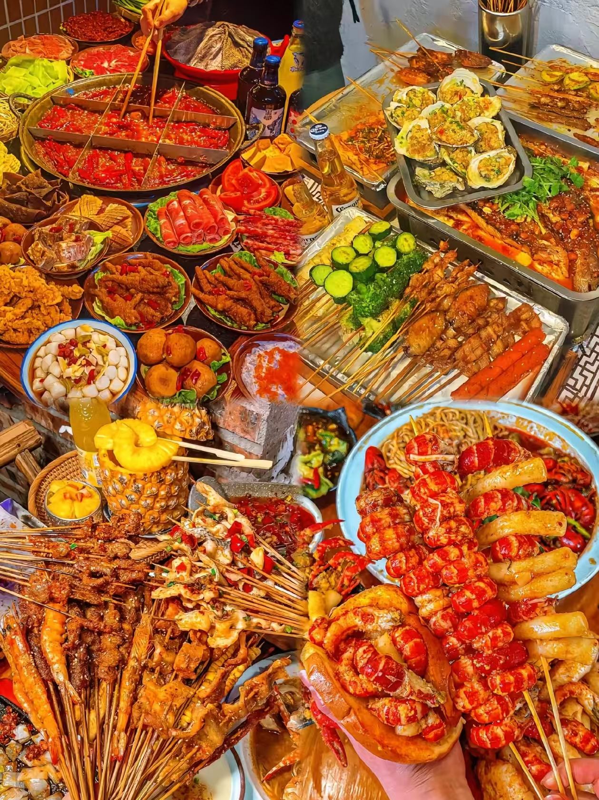
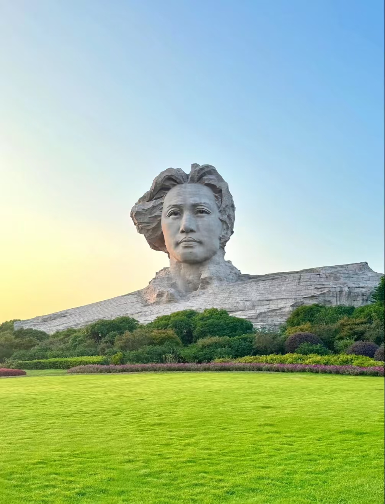
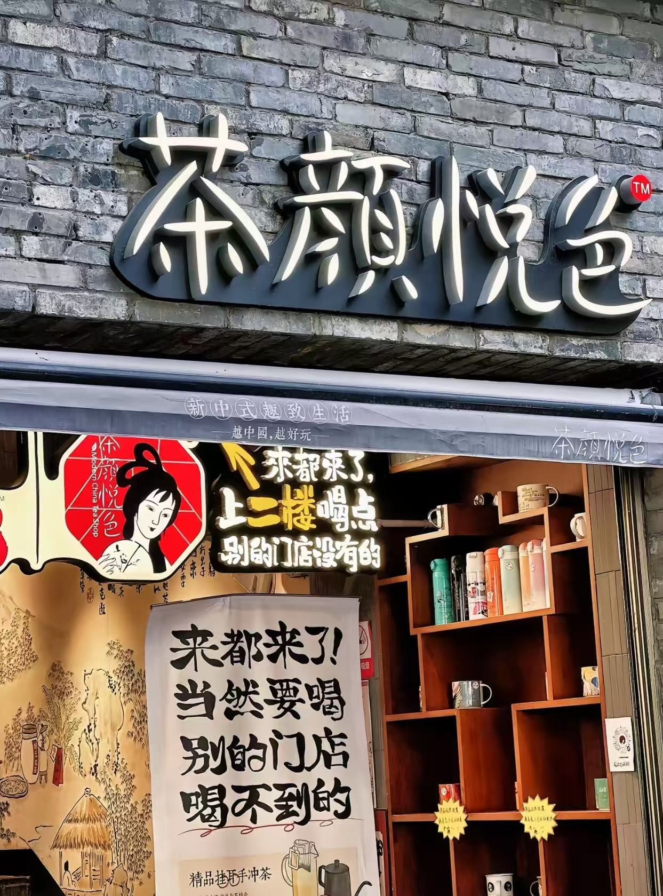

Changsha is not a city you visit for the scenery. You go for the food, the nightlife, and the chaos. It's loud, it's hot, and it's full of people who refuse to go to bed before 2am. If you're looking for a peaceful getaway, look elsewhere. If you want to eat until you can't walk, this is your place.
The heat is brutal in summer, the crowds are exhausting, and the spiciness will test your tolerance. But the food is genuinely one of the best things I've eaten in China, and the energy of the city is something you won't find anywhere else.
China's visa and visa-free policies change often. Check the latest requirements on the official website of the Chinese embassy in your country before booking your flight. Don't rely on travel forums or old blog posts.
You won't be able to access Google, Instagram, Facebook, or WhatsApp in China without a VPN. Install one (like ExpressVPN or NordVPN) before you leave home.
China is almost cashless. You'll need WeChat Pay or Alipay for almost everything. Link your international credit card to either app before you go.
Buy a local SIM card at the airport when you arrive. Monthly data plans cost around 60-80 RMB.

Changsha at night — the city comes alive after dark.

Pozi Street — Changsha's most famous food street.
Pozi Street is where you go for the full Changsha experience. It's a long street lined with food stalls selling everything from stinky tofu to sugar-coated haws. The crowds are intense, especially on weekends and holidays. It can feel more like a tourist attraction than a local street, but that's part of the chaos.
Expect crowds. On national holidays, it gets so packed that moving is a struggle. Go late at night (after 10pm) if you want to avoid the worst of it.

Changsha's night market food — spicy crayfish, skewers, hotpot, and more.
Changsha's night markets are the heart of the city's food culture. The most famous dish is spicy crayfish (口味虾), served with plenty of chili, garlic, and beer. It's messy, spicy, and excellent. Pair it with ice-cold beer and you'll understand why locals love it so much.
The night markets around Wuyi Square and Dongguanshan (冬瓜山) are where you'll find the best selection. Dongguanshan is less touristy and more popular with locals. The food is cheaper there and the stalls are more authentic.
Changsha's spiciness is no joke. Even if you think you can handle spicy food, start with "mild" (微辣) or "medium" (中辣). A glass of ice-cold beer or plum juice (酸梅汤) is your best friend. Water won't help as much.

A different view of Orange Island and the Chairman Mao statue.
Orange Island is a massive sandbar in the middle of the Xiang River. The main attraction is the giant statue of Chairman Mao at the southern tip. It's an impressive sight, especially when the lights come on at night.
The island is too large to walk comfortably. Take the sightseeing bus (40 RMB round trip) to save time and energy. If you're visiting on a weekend or holiday, expect long queues for the bus.

Tea Color — Changsha's local tea shop that's become a national phenomenon.
Tea Color is the most talked-about tea shop in Changsha. Its signature drink is the "Youlan Latte", a milk tea with a Chinese tea base that's noticeably less sweet and less heavy than typical bubble tea.
The tea is genuinely good, but don't expect magic. If you're used to standard bubble tea, Tea Color will feel refreshingly different. If you're not a tea person, it's just a nice drink. The biggest downside is the queue — some shops have lines that take 20-30 minutes. Most shops are on Wuyi Square. Order through their mini-program on WeChat to pick up.
Day 1: Yuelu Mountain (岳麓山) + Aiwan Pavilion (爱晚亭) → Yuelu Academy (岳麓书院) → Wuyi Square → Pozi Street for dinner.
Day 2: Orange Island (橘子洲) → Hunan Provincial Museum (湖南省博物馆) → Taiping Old Street → Night market for crayfish. The museum needs to be booked 3 days in advance on WeChat.
Best Time to Visit: March–May and September–November. Spring and autumn have the most comfortable temperatures. Summer (June–August) is brutally hot and humid, with temperatures up to 40°C. Winter is cold and damp but less crowded.
Where to Stay: Wuyi Square (most central, best for food and nightlife, but noisy). IFS area (luxury hotels, quiet, shopping). Dongguanshan (budget, local vibe, good for food).
Getting Around: Metro (lines 1-6, cheap, covers most attractions). Didi (ride-hailing, reliable, transparent pricing). Bus (not recommended, too confusing for foreigners).
Budget: Backpacker ¥200-400/day, Mid-range ¥500-1000/day, Luxury ¥1500+/day.
How Many Days: 2 days is enough for the main attractions. 3 days lets you eat everything and take it slow.